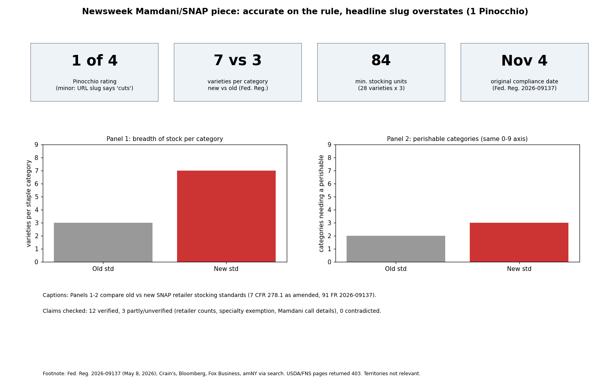

Newsweek's Mamdani/SNAP story is accurate on the rule: 1 Pinocchio

Findings: the rule details check out; only the URL slug and the unconfirmed counts weaken it
Overall: 1 Pinocchio (minor). Every rule detail I could check against the Federal Register final rule (2026-09137, published 2026-05-08) is correct: seven varieties (up from three) in each of four staple categories, perishables in three categories (up from two), minimum 84 stocking units, butter, jerky, snack bars, cheese and fruit spreads reclassified as accessory foods, and a November 4, 2026 implementation date. Multiple outlets (Crain's, Bloomberg, Fox Business, amNY, Epoch Times) report Mamdani's Friday Nov 13 announcement of at least a 90-day delay after talks with Trump and Secretary Rollins, and a first request for six months.
- Misleading framing: the URL slug says "snap-benefits-cuts"; the rule does not cut benefit amounts. The article text itself says so.
- The delay is enforcement-only; the rule is not withdrawn. The article says this correctly.
- Not verified: the 36 million participants and 250,000 retailers (FNS pages returned 403), the exact 90-day end date (one source implies Nov 4 to May 4, 2027, about six months), the specialty-store exemption, the 10,000 NYC bodega figure (Mamdani's own claim), and the USDA's initial rejection. No USDA notice of the delay was found.
- Correction: the 84 figure is 28 varieties times 3 units, so it is a minimum for the standard test, not a count of "items" in the general sense.
Claim table
| Claim | Verdict | Source |
|---|
| 7 varieties x 4 categories, up from 3 | Verified | Fed. Reg. |
| Perishables in 3 categories, up from 2 | Verified | Fed. Reg. |
| 84 qualifying items | Verified (84 stocking units) | Fed. Reg. |
| Butter, jerky, snack bars, fruit spreads excluded | Verified | Fed. Reg. |
| Original date Nov 4 | Verified | Fed. Reg. |
| 90-day delay via Mamdani-Trump-Rollins | Corroborated by press, no USDA primary found | Crain's, Bloomberg, Fox Business |
| Six-month ask | Press corroborated | Crain's/amNY |
| 36M SNAP, 250k retailers, 10k NYC bodegas, specialty exemption | Not checked here (USDA 403) | - |
| Rule does not cut benefits | Verified | Fed. Reg. abstract |
Method and confidence
Answer: as above. Confidence: high on rule text, medium on the deal (press only).
Sources
- https://www.federalregister.gov/documents/2026/05/08/2026-09137 (text read via govinfo.gov FR-2026-05-08)
- https://www.newsweek.com/zohran-mamdani-donald-trump-snap-benefits-cuts-nationwide-12714253
- https://www.crainsnewyork.com/health-care/cny-snap-stocking-rule-extension-mamdani-trump-20261113/
- https://www.bloomberg.com/news/articles/2026-11-13/mamdani-strikes-deal-with-trump-on-food-stamp-rules-for-bodegas
- https://www.foxbusiness.com/politics/mamdani-thanks-trump-helping-small-businesses-nyc-nationwide-president-delivered-relief
- https://www.amny.com/news/mamdani-urges-trump-admin-delay-snap-bodegas/